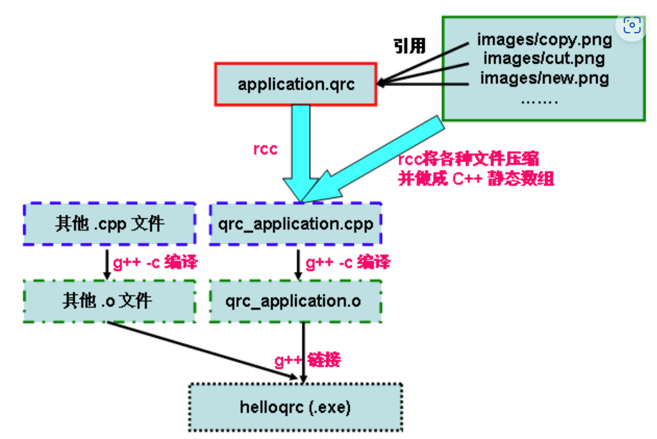

使用I18N国际化支持
1
2
3
4
5
6
7
8
9
10
11
12
13
14
15
16
17
18
19
20
21
22
23
24
25
26
27
28
29
30
31
32
33
34
35
36
37
38
39
40
41
|
set(QT_VERSION 5)
set(REQUIRED_LIBS Core Gui Widgets)
set(REQUIRED_LIBS_QUALIFIED Qt5::Core Qt5::Gui Qt5::Widgets)
set(LUPDATE_PATH "E:/Qt/5.15.2/msvc2019_64/bin/lupdate.exe")
set(LRELEASE_PATH "E:/Qt/5.15.2/msvc2019_64/bin/lrelease.exe")
set(TS_FILES
${CMAKE_SOURCE_DIR}/lang/zh_CN.ts
${CMAKE_SOURCE_DIR}/lang/ja_JP.ts)
find_package(Qt${QT_VERSION} COMPONENTS ${REQUIRED_LIBS} REQUIRED)
add_custom_target(update_all_ts_files ALL)
add_custom_target(create_all_qm_files ALL)
foreach(TS_FILE ${TS_FILES})
get_filename_component(I18N_NAME ${TS_FILE} NAME_WE)
set(TS_TARGET_NAME "update_ts_file_${I18N_NAME}")
add_custom_target(${TS_TARGET_NAME}
COMMAND ${LUPDATE_PATH} ${CMAKE_CURRENT_SOURCE_DIR} -ts ${TS_FILE}
VERBATIM)
add_dependencies(update_all_ts_files ${TS_TARGET_NAME})
set(QM_TARGET_NAME "create_qm_file_${I18N_NAME}")
set(QM_FILE "${CMAKE_CURRENT_BINARY_DIR}/${I18N_NAME}.qm")
add_custom_target(${QM_TARGET_NAME}
COMMAND ${LRELEASE_PATH} ${TS_FILE} -qm ${QM_FILE}
VERBATIM)
add_dependencies(${QM_TARGET_NAME} ${TS_TARGET_NAME})
add_dependencies(create_all_qm_files ${QM_TARGET_NAME})
endforeach()
configure_file(translations.qrc ${CMAKE_CURRENT_BINARY_DIR} COPYONLY)
add_executable(${PROJECT_NAME} main.cpp ${CMAKE_CURRENT_BINARY_DIR}/translations.qrc)
add_dependencies(${PROJECT_NAME} create_all_qm_files)
|
这里的translations.qrc代码格式如下(也可使用rcc自动生成)：
1
2
3
4
5
6
| <RCC>
<qresource>
<file>zh_CN.qm</file>
<file>ja_JP.qm</file>
</qresource>
</RCC>
|
以上代码可以更改lupdate和lrelease的路径后直接使用。
1
2
3
| add_executable(\${PROJECT_NAME} main.cpp\${CMAKE_CURRENT_BINARY_DIR}/translations.qrc)
add_executable(\${PROJECT_NAME} WIN32 main.cpp\${CMAKE_CURRENT_BINARY_DIR}/translations.qrc)
|
qt中的使用： 1
2
3
4
| QTranslator trans;
if (trans.load(":/ja_JP.qm")) {
QCoreApplication::installTranslator(&trans);
}
|
也可以使用QT自带的翻译: 在Qt的安装目录
C:\Qt\Qt5.7.0VS2015\5.7\msvc2015\translations
中有名为qt_zh_CN.qm翻译文件，QLineEdit等通过加载该翻译文件就能实现右键中文菜单，如下所示：
QApplication a(argc, argv);
//加载Qt中的资源文件，使Qt显示中文（包括QMessageBox、QLineEdit右键菜单等）
1
2
| QTranslator translator; translator.load(":/translations/qt_zh_CN.qm");
a.installTranslator(&translator);
|

这个图很好地解释了使用qrc来实现实际上是将资源直接集成到exe中了，这里提供用rcc的外部动态库
add_coustom_command使用
1
2
3
4
5
6
7
8
9
10
11
12
| add_custom_command(OUTPUT ${TEST_FILE}
COMMAND touch ${TEST_FILE}
COMMENT "Creating ${TEST_FILE}"
VERBATIM
)
|